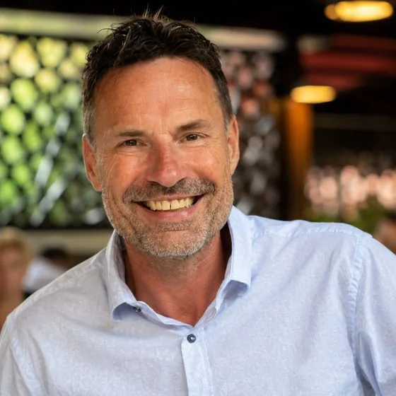

Gernbei · Würzburg
Alle reden von KI. In Ihrem Betrieb ist es noch ruhig.
KI? Gern dabei.
Drei Produkte fürs Büro, die behalten, was Sie ablegen, und Ihre Schreiben vorbereiten. Zwei für Ihre Kunden, die auf Ihrer Website und am Telefon antworten. Persönlich eingerichtet aus Würzburg.
Was passt zu Ihnen?
Haldenmeyer & Sorg Architekten
Fertig in wenigen Minuten. Gründlich wie von Hand.
Gemessen in den Läufen, die Sie oben sehen: jedes Ergebnis lag nach weniger als drei Minuten da.
Erfundener Betrieb, echte Antworten aus Gernbei, ungekürzt.
Für Ihr Büro
Für Ihre Kunden
Einzeln oder zu jedem Büro-Produkt dazu.
Fürs Handwerk
Gernbei behält, was Sie ablegen, auch jede Zusage an Ihre Kunden, und findet es wieder. Daraus entsteht die Antwort. Sie schicken sie ab.
Der Stundenzettel vom Monteur, die Zusage aus dem Büro, die Mail vom Netzbetreiber: Gernbei hat alles beisammen und sagt Ihnen, was gilt.
Für Handwerksbetriebe
Bringen Sie einen Regiezettel mit. Eigenen Zettel besprechen →
Alles zu Gernbei fürs HandwerkGernbei fürs Handwerk
am Handy, Foto vom Zettel
Was Gernbei fürs Handwerk kann. Tippen Sie an.
Erfundener Betrieb, echte Antwort, gekürzt.
Für Dienstleister
Gernbei behält, was Sie ablegen, und findet es wieder. Daraus entstehen Angebote, Protokolle und Antworten. Abschicken tun Sie.
Für Selbständige und kleine Büros
Bringen Sie eine Kundenmail oder Ihre Stichpunkte mit. Eigenes Beispiel besprechen →
Alles zu Gernbei für DienstleisterWas machen Sie?
Gernbei für Dienstleister
am Rechner, vor dem Lenkungskreis
Beispiele aus Ihrem Alltag. Tippen Sie an.
Erfundener Betrieb, echte Antwort, gekürzt.
Und wenn das ganze Team mitarbeitet:
Firmengedächtnis
Jeder arbeitet in seinem Bereich. Was geteilt ist, wissen alle, mit Quelle.
Was einer weiß, findet das ganze Team: der Neue, die Projektleiterin, der Chef nach dem Urlaub. Mit dem Grund hinter jeder Entscheidung und dem Verweis auf die Originaldatei.
Für Teams, die Wissen teilen · Erste Stufe über die BAFA förderfähig
Bringen Sie eine Frage mit, die bei Ihnen immer wieder kommt. Frage aus Ihrem Büro besprechen →
Alles zum FirmengedächtnisJeder Betrieb hat einen Peter. Was wird aus seinem Wissen, wenn er geht? Warum ich Gernbei baue →
Was Suchzeit und Wissensverlust Ihren Betrieb kosten, schätzen Sie mit Ihren eigenen Zahlen. Zum Rechner →
Gernbei Firmengedächtnis
Lukas, Woche zwei, am Rechner
aus Peters Notiz, März 2024 → für Lukas, heute
Wer fragt? Tippen Sie an.
Erfundenes Büro, echte Antwort, gekürzt.
Für Ihre Website
Ihre Besucher fragen, er antwortet aus Ihren Inhalten, mit Quelle. Neue Fragen landen bei Ihnen.
Einzeln oder dazu
Welche Fragen stellen Ihre Besucher? Einsatz auf Ihrer Website besprechen →
Alles zum Website-ChatbotGernbei.de · Fragen an Gernbei
Besucherin, am Handy
Drei echte Fragen an den Chatbot auf gernbei.de. Tippen Sie an.
Echte Antwort des Chatbots auf gernbei.de, 07.11.2026, gekürzt.
Für Ihr Telefon
Er beantwortet, was auf Ihrer Website steht, und nimmt Rückrufwünsche auf. Die Nummer liest er zur Kontrolle vor.
Im Probebetrieb
Welche Anrufe soll er für Sie annehmen? Einsatz am Telefon besprechen →
Alles zum KI-TelefonassistentenAnruf bei Gernbei
Anrufer, am Telefon
Vier Testanrufe beim KI-Telefonassistenten. Tippen Sie an.
Testanruf vom 07.11.2026, so gespeichert. Der Satz des Anrufers steht wie auf seinem Testzettel. Gespeichert wird allein der Rückrufwunsch.
Der Preis
Den Preis nenne ich Ihnen im Gespräch, passend zu Ihrem Betrieb. Sie fangen mit einem Zugang an und nehmen weitere dazu, im selben Bereich. Beim Firmengedächtnis kommt eine einmalige Einrichtung je Arbeitsplatz dazu.
Dazu brauchen Sie ein eigenes Claude-Team bei Anthropic, dem Hersteller der KI.
Ihr Angebot nennt alles einzeln: den Betrag im Monat, die Einrichtung, wo eine anfällt, und das Claude-Team. So sehen Sie die ganzen Kosten, bevor Sie zusagen.
Angebot nur für Unternehmer.

Über mich
Berater für KI, Veränderung und Zusammenarbeit aus Würzburg. Diplom-Informatiker, seit 35 Jahren in der IT, knapp zwanzig Jahre davon im Konzern, wo ich Teams durch Veränderung begleitet habe.
KI ist für mich die Fortsetzung dieser Arbeit: Ergebnisse, die man sieht.
Mehr als zwölf Jahre Projekt- und Engagement Manager, sieben Jahre Agility Master. Teams durch die agile Transformation begleiten, Konflikte moderieren, Führungskräfte coachen. Zertifizierter Projektmanager nach GPM-Standard, Ausbildung in lösungsfokussiertem Coaching.
„Die richtigen Fragen stellen. Den Rest finden wir gemeinsam."
Ein Kaffee und ein offenes Gespräch darüber, wo in Ihrem Betrieb Wissen steckt, das bleiben soll, und welches Produkt zu Ihrem Betrieb passt. Bringen Sie eine Kundenmail, einen Regiezettel oder Projektnotizen mit, dann sehen Sie, was Gernbei daraus macht.
Wenn danach klar ist, dass es Sinn macht, richte ich Ihnen den ersten Arbeitsplatz ein. So oder so hatten Sie einen guten Kaffee.
● BAFA-gelisteter Berater · 50% Förderung für KMU, 1.750 EUR je Beratung
Oder direkt: hallo@gernbei.de · 0931 45321005 · Würzburg · remote & vor Ort